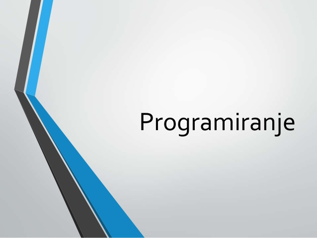
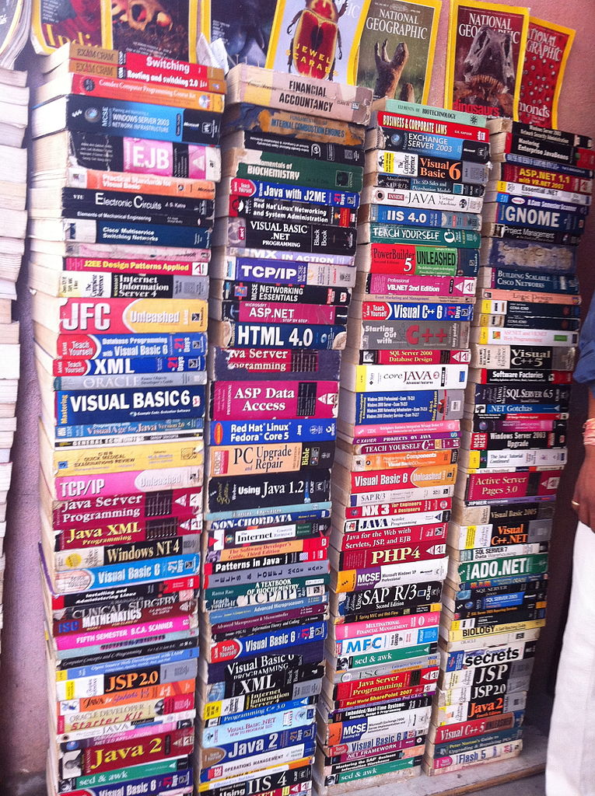
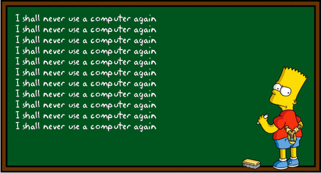

|  | Programiranje Link ka drugoj Link ka trećoj lokacija |
||
IstorijatNova tehnologija omogućila je poslovnu primenu računara u mnogim oblastima. U ovoj eri dominirali su mejnfrejm (engl. mainframe)mejnfrejm računari računari koji su bili izrazito moćni za to doba, čija se brzina merila milionima instrukcija u sekundi (engl. MIPS; na primer, neki podmodeli računara IBM 360 imali su brzinu od skoro 1 MIPS) i koji su imali mogućnost skladištenja i obrade velike količine podataka te su korišćeni od strane vlada i velikih korporacija za popise, statističke obrade i slično. Kod računara ove generacije uveden je sistem deljenja vremena (engl. timesharing) koji dragoceno procesorsko vreme raspodeljuje i daje na uslugu različitim korisnicima koji istovremeno rade na računaru i komuniciraju sa njim putem specijalizovanih terminala. U ovo vreme uvedeni su prvi standardi za jezike višeg nivoa (npr. ANSI FORTRAN). Korišćeni su različiti operativni sistemi, uglavnom razvijeni u okviru kompanije IBM. Sa udelom od 90%, kompanija IBM je imala apsolutnu dominaciju na tržištu ovih računara. C programski jezikC je programski jezik opće namjene. Razvio ga je Dennis Ritchie sedamdestih godina prošlog stoljeća, za korišćenje na Unix sistemima, u Bell Telephone Laboratories Inc. Iako je napravljen za sistemsko programiranje, takođe se koristi i za programiranje aplikacija. Uvod u C++ programiranjeC++ je objektno orjentisan programski jezik, koji je napisao Bjarne Stroustrup 1983. godine kao poboljšanje jezika C. Prvobitno je nazvan C sa klasama. Pored uvođenja klasa, uveo je i mnoštvo poboljšanja i olakšanja u radu sa kompleksnim sistemima poput grafičkog interfejsa i mrežnih okruženja. Za C++ možete koristiti brojne editore, kompajlere i IDE-e. Za učenje preporučujemo Code::Blocks, a za ozbiljne projekte Qt razvojno okruženje na Linuxu, ili Microsoft Visual Studio ako koristite Windows. Petlje u jeziku CPonekad ćete želeti da uradite nešto mnogo puta. Primer bi bio ispisivanje nekog znaka na početku svakog od 24 reda na ekranu.
Da biste ovo uradili, morali biste da otkucate 24 printf naredbe. Možemo da koristimo petlju ovo odradi za nas,
a onda moramo samo jednom da otkucamo printf naredbu.
Postoje tri osnovne vrste petlji, a to su: |
 | ||
| Link Code Akademija | |||
| Link W3Schools |  | ||
| Objavila: Branka Sekulović Kontakt informacije: brankase@yahoo.com |
|||